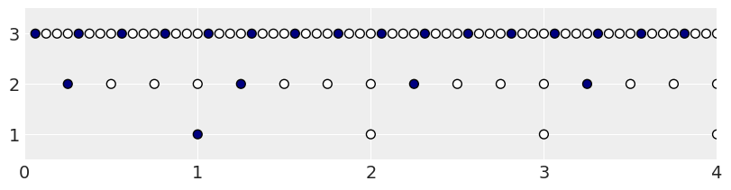
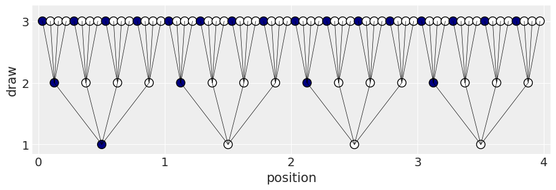
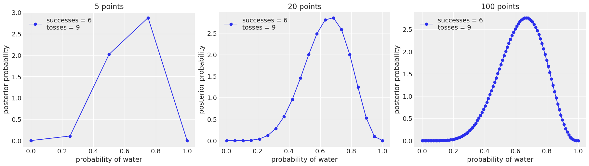
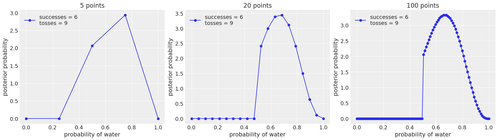
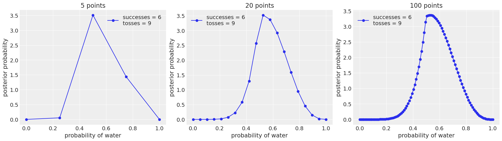
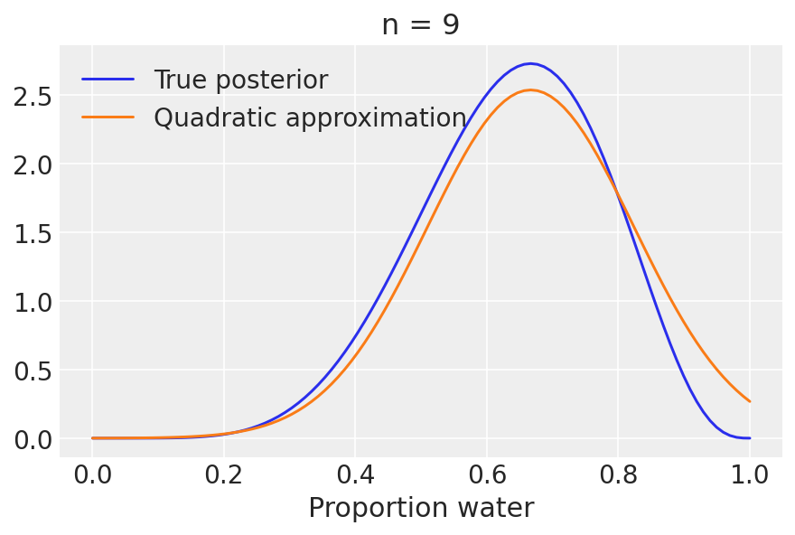
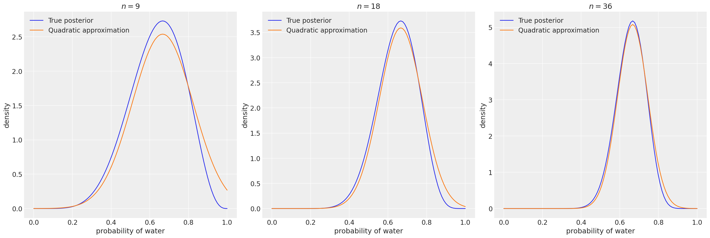
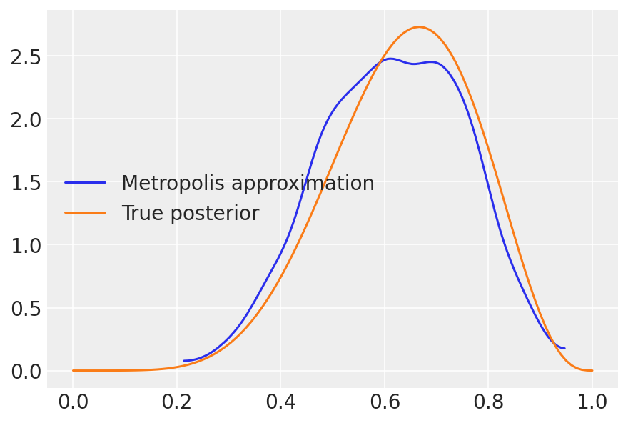

2. Small Worlds and Large Worlds#
import arviz as az
import matplotlib.pyplot as plt
import numpy as np
import pandas as pd
import pymc as pm
import scipy.stats as stats
RANDOM_SEED = 8927
rng = np.random.default_rng(RANDOM_SEED)
az.style.use("arviz-darkgrid")
2.1 The garden of forking data#
2.1.1 Counting possibilities#
garden = pd.DataFrame(
{
"p1": np.repeat(0, 4),
"p2": np.repeat([1, 0], [1, 3]),
"p3": np.repeat([1, 0], [2, 2]),
"p4": np.repeat([1, 0], [3, 1]),
"p5": np.repeat(1, 4),
}
)
garden.head()
| p1 | p2 | p3 | p4 | p5 | |
|---|---|---|---|---|---|
| 0 | 0 | 1 | 1 | 1 | 1 |
| 1 | 0 | 0 | 1 | 1 | 1 |
| 2 | 0 | 0 | 0 | 1 | 1 |
| 3 | 0 | 0 | 0 | 0 | 1 |
garden["x"] = range(1, 5)
garden_melt = garden.melt(
id_vars=["x"], value_vars=["p1", "p2", "p3", "p4", "p5"], var_name="possibility"
)
garden_melt["color"] = garden_melt["value"].map(dict(zip([0, 1], ["white", "navy"])))
garden_melt.head(8)
| x | possibility | value | color | |
|---|---|---|---|---|
| 0 | 1 | p1 | 0 | white |
| 1 | 2 | p1 | 0 | white |
| 2 | 3 | p1 | 0 | white |
| 3 | 4 | p1 | 0 | white |
| 4 | 1 | p2 | 1 | navy |
| 5 | 2 | p2 | 0 | white |
| 6 | 3 | p2 | 0 | white |
| 7 | 4 | p2 | 0 | white |
_, ax = plt.subplots(figsize=(4, 3))
ax.scatter(
garden_melt["x"],
garden_melt["possibility"],
c=garden_melt["color"],
s=100,
)
ax.set_ylabel("Possibility", fontsize="xx-large")
ax.set(xticks=[], yticks=range(5), yticklabels=range(1, 6))
plt.show()

from tabulate import tabulate
df = pd.DataFrame({"draw": [1, 2, 3], "marbles": [4, 4, 4]})
df["possibilities"] = df["marbles"] ** df["draw"]
table = tabulate(
df,
headers="keys",
tablefmt="simple_outline",
colalign=["right"] * 3,
showindex=False,
)
print(table)
┌────────┬───────────┬─────────────────┐
│ draw │ marbles │ possibilities │
├────────┼───────────┼─────────────────┤
│ 1 │ 4 │ 4 │
│ 2 │ 4 │ 16 │
│ 3 │ 4 │ 64 │
└────────┴───────────┴─────────────────┘
d = pd.DataFrame(
{
"position": np.concatenate(
[
np.arange(1, 4**1 + 1) / 4**0,
np.arange(1, 4**2 + 1) / 4**1,
np.arange(1, 4**3 + 1) / 4**2,
]
),
"draw": np.repeat(np.arange(1, 4), repeats=(4**1, 4**2, 4**3)),
"fill": np.tile(np.repeat(["navy", "white"], repeats=(1, 3)), 4**0 + 4**1 + 4**2),
}
)
d
| position | draw | fill | |
|---|---|---|---|
| 0 | 1.0000 | 1 | navy |
| 1 | 2.0000 | 1 | white |
| 2 | 3.0000 | 1 | white |
| 3 | 4.0000 | 1 | white |
| 4 | 0.2500 | 2 | navy |
| ... | ... | ... | ... |
| 79 | 3.7500 | 3 | white |
| 80 | 3.8125 | 3 | navy |
| 81 | 3.8750 | 3 | white |
| 82 | 3.9375 | 3 | white |
| 83 | 4.0000 | 3 | white |
84 rows × 3 columns
_, ax = plt.subplots(figsize=(8, 2))
ax.scatter(
d["position"],
d["draw"],
c=d["fill"],
s=50,
edgecolors="black",
)
ax.set(
xlim=(0, 4),
ylim=(0.5, 3.5),
xticks=np.arange(5),
yticks=[1, 2, 3],
)
plt.show()

d["denominator"] = d["draw"].map(
dict(
zip(
[1, 2, 3],
[0.5 / 4**0, 0.5 / 4**1, 0.5 / 4**2],
)
)
)
d
| position | draw | fill | denominator | |
|---|---|---|---|---|
| 0 | 1.0000 | 1 | navy | 0.50000 |
| 1 | 2.0000 | 1 | white | 0.50000 |
| 2 | 3.0000 | 1 | white | 0.50000 |
| 3 | 4.0000 | 1 | white | 0.50000 |
| 4 | 0.2500 | 2 | navy | 0.12500 |
| ... | ... | ... | ... | ... |
| 79 | 3.7500 | 3 | white | 0.03125 |
| 80 | 3.8125 | 3 | navy | 0.03125 |
| 81 | 3.8750 | 3 | white | 0.03125 |
| 82 | 3.9375 | 3 | white | 0.03125 |
| 83 | 4.0000 | 3 | white | 0.03125 |
84 rows × 4 columns
lines_1 = pd.DataFrame(
{
"x": np.repeat(np.arange(1, 4**1 + 1), repeats=4) - 0.5 / 4**0,
"xend": np.arange(1, 4**2 + 1) / 4 - 0.5 / 4**1,
"y": np.repeat(1, repeats=4**2),
"yend": np.repeat(2, repeats=4**2),
}
)
lines_1
| x | xend | y | yend | |
|---|---|---|---|---|
| 0 | 0.5 | 0.125 | 1 | 2 |
| 1 | 0.5 | 0.375 | 1 | 2 |
| 2 | 0.5 | 0.625 | 1 | 2 |
| 3 | 0.5 | 0.875 | 1 | 2 |
| 4 | 1.5 | 1.125 | 1 | 2 |
| 5 | 1.5 | 1.375 | 1 | 2 |
| 6 | 1.5 | 1.625 | 1 | 2 |
| 7 | 1.5 | 1.875 | 1 | 2 |
| 8 | 2.5 | 2.125 | 1 | 2 |
| 9 | 2.5 | 2.375 | 1 | 2 |
| 10 | 2.5 | 2.625 | 1 | 2 |
| 11 | 2.5 | 2.875 | 1 | 2 |
| 12 | 3.5 | 3.125 | 1 | 2 |
| 13 | 3.5 | 3.375 | 1 | 2 |
| 14 | 3.5 | 3.625 | 1 | 2 |
| 15 | 3.5 | 3.875 | 1 | 2 |
lines_2 = pd.DataFrame(
{
"x": np.repeat(np.arange(1, 4**2 + 1)/4, repeats=4) - 0.5 / 4**1,
"xend": np.arange(1, 4**3 + 1) / 4**2 - 0.5 / 4**2,
"y": np.repeat(2, repeats=4**3),
"yend": np.repeat(3, repeats=4**3),
}
)
lines_2
| x | xend | y | yend | |
|---|---|---|---|---|
| 0 | 0.125 | 0.03125 | 2 | 3 |
| 1 | 0.125 | 0.09375 | 2 | 3 |
| 2 | 0.125 | 0.15625 | 2 | 3 |
| 3 | 0.125 | 0.21875 | 2 | 3 |
| 4 | 0.375 | 0.28125 | 2 | 3 |
| ... | ... | ... | ... | ... |
| 59 | 3.625 | 3.71875 | 2 | 3 |
| 60 | 3.875 | 3.78125 | 2 | 3 |
| 61 | 3.875 | 3.84375 | 2 | 3 |
| 62 | 3.875 | 3.90625 | 2 | 3 |
| 63 | 3.875 | 3.96875 | 2 | 3 |
64 rows × 4 columns
d["position"] = d["position"] - d["denominator"]
d
| position | draw | fill | denominator | |
|---|---|---|---|---|
| 0 | 0.50000 | 1 | navy | 0.50000 |
| 1 | 1.50000 | 1 | white | 0.50000 |
| 2 | 2.50000 | 1 | white | 0.50000 |
| 3 | 3.50000 | 1 | white | 0.50000 |
| 4 | 0.12500 | 2 | navy | 0.12500 |
| ... | ... | ... | ... | ... |
| 79 | 3.71875 | 3 | white | 0.03125 |
| 80 | 3.78125 | 3 | navy | 0.03125 |
| 81 | 3.84375 | 3 | white | 0.03125 |
| 82 | 3.90625 | 3 | white | 0.03125 |
| 83 | 3.96875 | 3 | white | 0.03125 |
84 rows × 4 columns
from matplotlib.lines import Line2D
_, ax = plt.subplots(figsize=(9, 3))
polar_factor = np.pi / 2
for _, row in lines_1.iterrows():
ax.add_line(
Line2D(
[row["x"], row["xend"]],
[row["y"], row["yend"]],
color="black",
linewidth=1 / 2,
)
)
for _, row in lines_2.iterrows():
ax.add_line(
Line2D(
[row["x"], row["xend"]],
[row["y"], row["yend"]],
color="black",
linewidth=1 / 2,
)
)
ax.scatter(
d["position"],
d["draw"],
c=d["fill"],
edgecolors="black",
s=100,
)
ax.set(
xlim=(-0.05, 4.05),
ylim=(0.85, 3.25),
xticks=np.arange(5),
yticks=[1, 2, 3],
)
ax.set(xlabel="position", ylabel="draw")
plt.show()

from matplotlib.lines import Line2D
_, ax = plt.subplots(subplot_kw={"projection": "polar"})
polar_factor = np.pi / 2
for _, row in lines_1.iterrows():
ax.add_line(
Line2D(
[row["x"] * polar_factor, row["xend"] * polar_factor],
[row["y"] * polar_factor, row["yend"] * polar_factor],
color="black",
linewidth=1 / 2,
)
)
for _, row in lines_2.iterrows():
ax.add_line(
Line2D(
[row["x"] * polar_factor, row["xend"] * polar_factor],
[row["y"] * polar_factor, row["yend"] * polar_factor],
color="black",
linewidth=1 / 2,
)
)
ax.scatter(
d["position"] * polar_factor,
d["draw"] * polar_factor,
c=d["fill"],
edgecolors="black",
s=100,
)
ax.xaxis.grid(False)
ax.yaxis.grid(False)
ax.set(
xticks=np.arange(4) * polar_factor,
xticklabels=[],
yticks=[],
theta_offset=polar_factor / 2,
)
plt.show()

2.1.2 Combining other information#
Model#
Code 2.1#
ways = np.array([0, 3, 8, 9, 0])
ways / ways.sum()
array([0. , 0.15, 0.4 , 0.45, 0. ])
Code 2.2#
\[Pr(w \mid n, p) = \frac{n!}{w!(n − w)!} p^w (1 − p)^{n−w}\]
The probability of observing six W’s in nine tosses — below a value of \(p=0.5\).
stats.binom.pmf(6, n=9, p=0.5)
0.16406250000000003
Code 2.3 and 2.5#
Computing the posterior using a grid approximation.
In the book, the following code is not inside a function, but this way it is easier to play with different parameters.
def uniform_prior(grid_points):
"""
Returns Uniform prior density
Parameters:
grid_points (numpy.array): Array of prior values
Returns:
density (numpy.array): Uniform density of prior values
"""
return np.repeat(5, grid_points)
def truncated_prior(grid_points, trunc_point=0.5):
"""
Returns Truncated prior density
Parameters:
grid_points (numpy.array): Array of prior values
trunc_point (double): Value where the prior is truncated
Returns:
density (numpy.array): Truncated density of prior values
"""
return (np.linspace(0, 1, grid_points) >= trunc_point).astype(int)
def double_exp_prior(grid_points):
"""
Returns Double Exponential prior density
Parameters:
grid_points (numpy.array): Array of prior values
Returns:
density (numpy.array): Double Exponential density of prior values
"""
return np.exp(-5 * abs(np.linspace(0, 1, grid_points) - 0.5))
def binom_post_grid_approx(prior_func, grid_points=5, success=6, tosses=9):
"""
Returns the grid approximation of posterior distribution with binomial likelihood.
Parameters:
prior_func (function): A function that returns the likelihood of the prior
grid_points (int): Number of points in the prior grid
successes (int): Number of successes
tosses (int): number of tosses
Returns:
p_grid (numpy.array): Array of prior values
posterior (numpy.array): Likelihood (density) of prior values
"""
# define grid
p_grid = np.linspace(0, 1, grid_points)
# define prior
prior = prior_func(grid_points)
# compute likelihood at each point in the grid
likelihood = stats.binom.pmf(success, tosses, p_grid)
# compute product of likelihood and prior
unstd_posterior = likelihood * prior
# standardize the posterior, so it sums to 1
posterior = unstd_posterior / (unstd_posterior.sum() / grid_points)
return p_grid, posterior
Code 2.3#
w, n = 6, 9
points = (5, 20, 100)
_, ax = plt.subplots(1, len(points), figsize=(6 * len(points), 5))
for idx, ps in enumerate(points):
p_grid, posterior = binom_post_grid_approx(uniform_prior, ps, w, n)
ax[idx].plot(p_grid, posterior, "o-", label=f"successes = {w}\ntosses = {n}")
ax[idx].set_xlabel("probability of water")
ax[idx].set_ylabel("posterior probability")
ax[idx].set_title(f"{ps} points")
ax[idx].legend(loc=0)

_, ax = plt.subplots(1, len(points), figsize=(6 * len(points), 5))
for idx, ps in enumerate(points):
p_grid, posterior = binom_post_grid_approx(truncated_prior, ps, w, n)
ax[idx].plot(p_grid, posterior, "o-", label=f"successes = {w}\ntosses = {n}")
ax[idx].set_xlabel("probability of water")
ax[idx].set_ylabel("posterior probability")
ax[idx].set_title(f"{ps} points")
ax[idx].legend(loc=0)

_, ax = plt.subplots(1, len(points), figsize=(6 * len(points), 5))
for idx, ps in enumerate(points):
p_grid, posterior = binom_post_grid_approx(double_exp_prior, ps, w, n)
ax[idx].plot(p_grid, posterior, "o-", label=f"successes = {w}\ntosses = {n}")
ax[idx].set_xlabel("probability of water")
ax[idx].set_ylabel("posterior probability")
ax[idx].set_title(f"{ps} points")
ax[idx].legend(loc=0)

Code 2.6#
Computing the posterior using the quadratic approximation (quad).
np.repeat((0, 1), (3, 6))
array([0, 0, 0, 1, 1, 1, 1, 1, 1])
data = np.repeat((0, 1), (3, 6))
with pm.Model() as normal_approximation:
p = pm.Uniform("p", 0, 1) # uniform priors
w = pm.Binomial("w", n=len(data), p=p, observed=data.sum()) # binomial likelihood
mean_q = pm.find_MAP()
p_value = normal_approximation.rvs_to_values[p]
p_value.tag.transform = None
p_value.name = p.name
std_q = ((1 / pm.find_hessian(mean_q, vars=[p])) ** 0.5)[0]
# display summary of quadratic approximation
print("Mean, Standard deviation\np {:.2}, {:.2}".format(mean_q["p"], std_q[0]))
100.00% [6/6 00:00<00:00 logp = -1.8075, ||grad|| = 1.5]
---------------------------------------------------------------------------
KeyboardInterrupt Traceback (most recent call last)
Cell In[23], line 11
8 p_value.tag.transform = None
9 p_value.name = p.name
---> 11 std_q = ((1 / pm.find_hessian(mean_q, vars=[p])) ** 0.5)[0]
13 # display summary of quadratic approximation
14 print("Mean, Standard deviation\np {:.2}, {:.2}".format(mean_q["p"], std_q[0]))
File ~/.conda/envs/kaggle/lib/python3.11/site-packages/pymc/tuning/scaling.py:58, in find_hessian(point, vars, model)
47 """
48 Returns Hessian of logp at the point passed.
49
(...)
55 Variables for which Hessian is to be calculated.
56 """
57 model = modelcontext(model)
---> 58 H = model.compile_d2logp(vars)
59 return H(Point(point, filter_model_vars=True, model=model))
File ~/.conda/envs/kaggle/lib/python3.11/site-packages/pymc/model.py:705, in Model.compile_d2logp(self, vars, jacobian)
690 def compile_d2logp(
691 self,
692 vars: Optional[Union[Variable, Sequence[Variable]]] = None,
693 jacobian: bool = True,
694 ) -> PointFunc:
695 """Compiled log probability density hessian function.
696
697 Parameters
(...)
703 Whether to include jacobian terms in logprob graph. Defaults to True.
704 """
--> 705 return self.model.compile_fn(self.d2logp(vars=vars, jacobian=jacobian))
File ~/.conda/envs/kaggle/lib/python3.11/site-packages/pymc/model.py:1655, in Model.compile_fn(self, outs, inputs, mode, point_fn, **kwargs)
1652 inputs = inputvars(outs)
1654 with self:
-> 1655 fn = compile_pymc(
1656 inputs,
1657 outs,
1658 allow_input_downcast=True,
1659 accept_inplace=True,
1660 mode=mode,
1661 **kwargs,
1662 )
1664 if point_fn:
1665 return PointFunc(fn)
File ~/.conda/envs/kaggle/lib/python3.11/site-packages/pymc/pytensorf.py:1104, in compile_pymc(inputs, outputs, random_seed, mode, **kwargs)
1102 opt_qry = mode.provided_optimizer.including("random_make_inplace", check_parameter_opt)
1103 mode = Mode(linker=mode.linker, optimizer=opt_qry)
-> 1104 pytensor_function = pytensor.function(
1105 inputs,
1106 outputs,
1107 updates={**rng_updates, **kwargs.pop("updates", {})},
1108 mode=mode,
1109 **kwargs,
1110 )
1111 return pytensor_function
File ~/.conda/envs/kaggle/lib/python3.11/site-packages/pytensor/compile/function/__init__.py:315, in function(inputs, outputs, mode, updates, givens, no_default_updates, accept_inplace, name, rebuild_strict, allow_input_downcast, profile, on_unused_input)
309 fn = orig_function(
310 inputs, outputs, mode=mode, accept_inplace=accept_inplace, name=name
311 )
312 else:
313 # note: pfunc will also call orig_function -- orig_function is
314 # a choke point that all compilation must pass through
--> 315 fn = pfunc(
316 params=inputs,
317 outputs=outputs,
318 mode=mode,
319 updates=updates,
320 givens=givens,
321 no_default_updates=no_default_updates,
322 accept_inplace=accept_inplace,
323 name=name,
324 rebuild_strict=rebuild_strict,
325 allow_input_downcast=allow_input_downcast,
326 on_unused_input=on_unused_input,
327 profile=profile,
328 output_keys=output_keys,
329 )
330 return fn
File ~/.conda/envs/kaggle/lib/python3.11/site-packages/pytensor/compile/function/pfunc.py:367, in pfunc(params, outputs, mode, updates, givens, no_default_updates, accept_inplace, name, rebuild_strict, allow_input_downcast, profile, on_unused_input, output_keys, fgraph)
353 profile = ProfileStats(message=profile)
355 inputs, cloned_outputs = construct_pfunc_ins_and_outs(
356 params,
357 outputs,
(...)
364 fgraph=fgraph,
365 )
--> 367 return orig_function(
368 inputs,
369 cloned_outputs,
370 mode,
371 accept_inplace=accept_inplace,
372 name=name,
373 profile=profile,
374 on_unused_input=on_unused_input,
375 output_keys=output_keys,
376 fgraph=fgraph,
377 )
File ~/.conda/envs/kaggle/lib/python3.11/site-packages/pytensor/compile/function/types.py:1744, in orig_function(inputs, outputs, mode, accept_inplace, name, profile, on_unused_input, output_keys, fgraph)
1742 try:
1743 Maker = getattr(mode, "function_maker", FunctionMaker)
-> 1744 m = Maker(
1745 inputs,
1746 outputs,
1747 mode,
1748 accept_inplace=accept_inplace,
1749 profile=profile,
1750 on_unused_input=on_unused_input,
1751 output_keys=output_keys,
1752 name=name,
1753 fgraph=fgraph,
1754 )
1755 with config.change_flags(compute_test_value="off"):
1756 fn = m.create(defaults)
File ~/.conda/envs/kaggle/lib/python3.11/site-packages/pytensor/compile/function/types.py:1518, in FunctionMaker.__init__(self, inputs, outputs, mode, accept_inplace, function_builder, profile, on_unused_input, fgraph, output_keys, name, no_fgraph_prep)
1515 self.fgraph = fgraph
1517 if not no_fgraph_prep:
-> 1518 self.prepare_fgraph(inputs, outputs, found_updates, fgraph, mode, profile)
1520 assert len(fgraph.outputs) == len(outputs + found_updates)
1522 # The 'no_borrow' outputs are the ones for which that we can't
1523 # return the internal storage pointer.
File ~/.conda/envs/kaggle/lib/python3.11/site-packages/pytensor/compile/function/types.py:1411, in FunctionMaker.prepare_fgraph(inputs, outputs, additional_outputs, fgraph, mode, profile)
1404 rewrite_time = None
1406 with config.change_flags(
1407 mode=mode,
1408 compute_test_value=config.compute_test_value_opt,
1409 traceback__limit=config.traceback__compile_limit,
1410 ):
-> 1411 rewriter_profile = rewriter(fgraph)
1413 end_rewriter = time.perf_counter()
1414 rewrite_time = end_rewriter - start_rewriter
File ~/.conda/envs/kaggle/lib/python3.11/site-packages/pytensor/graph/rewriting/basic.py:125, in GraphRewriter.__call__(self, fgraph)
123 def __call__(self, fgraph):
124 """Rewrite a `FunctionGraph`."""
--> 125 return self.rewrite(fgraph)
File ~/.conda/envs/kaggle/lib/python3.11/site-packages/pytensor/graph/rewriting/basic.py:121, in GraphRewriter.rewrite(self, fgraph, *args, **kwargs)
112 """
113
114 This is meant as a shortcut for the following::
(...)
118
119 """
120 self.add_requirements(fgraph)
--> 121 return self.apply(fgraph, *args, **kwargs)
File ~/.conda/envs/kaggle/lib/python3.11/site-packages/pytensor/graph/rewriting/basic.py:292, in SequentialGraphRewriter.apply(self, fgraph)
290 nb_nodes_before = len(fgraph.apply_nodes)
291 t0 = time.perf_counter()
--> 292 sub_prof = rewriter.apply(fgraph)
293 l.append(float(time.perf_counter() - t0))
294 sub_profs.append(sub_prof)
File ~/.conda/envs/kaggle/lib/python3.11/site-packages/pytensor/graph/rewriting/basic.py:2454, in EquilibriumGraphRewriter.apply(self, fgraph, start_from)
2452 nb = change_tracker.nb_imported
2453 t_rewrite = time.perf_counter()
-> 2454 sub_prof = grewrite.apply(fgraph)
2455 time_rewriters[grewrite] += time.perf_counter() - t_rewrite
2456 sub_profs.append(sub_prof)
File ~/.conda/envs/kaggle/lib/python3.11/site-packages/pytensor/graph/rewriting/basic.py:2036, in WalkingGraphRewriter.apply(self, fgraph, start_from)
2034 continue
2035 current_node = node
-> 2036 nb += self.process_node(fgraph, node)
2037 loop_t = time.perf_counter() - t0
2038 finally:
File ~/.conda/envs/kaggle/lib/python3.11/site-packages/pytensor/graph/rewriting/basic.py:1918, in NodeProcessingGraphRewriter.process_node(self, fgraph, node, node_rewriter)
1916 assert node_rewriter is not None
1917 try:
-> 1918 replacements = node_rewriter.transform(fgraph, node)
1919 except Exception as e:
1920 if self.failure_callback is not None:
File ~/.conda/envs/kaggle/lib/python3.11/site-packages/pytensor/graph/rewriting/basic.py:1078, in FromFunctionNodeRewriter.transform(self, fgraph, node)
1073 if not (
1074 node.op in self._tracks or isinstance(node.op, self._tracked_types)
1075 ):
1076 return False
-> 1078 return self.fn(fgraph, node)
File ~/.conda/envs/kaggle/lib/python3.11/site-packages/pytensor/tensor/rewriting/basic.py:1138, in constant_folding(fgraph, node)
1135 storage_map[o] = [None]
1136 compute_map[o] = [False]
-> 1138 thunk = node.op.make_thunk(node, storage_map, compute_map, no_recycling=[])
1139 required = thunk()
1141 # A node whose inputs are all provided should always return successfully
File ~/.conda/envs/kaggle/lib/python3.11/site-packages/pytensor/link/c/op.py:131, in COp.make_thunk(self, node, storage_map, compute_map, no_recycling, impl)
127 self.prepare_node(
128 node, storage_map=storage_map, compute_map=compute_map, impl="c"
129 )
130 try:
--> 131 return self.make_c_thunk(node, storage_map, compute_map, no_recycling)
132 except (NotImplementedError, MethodNotDefined):
133 # We requested the c code, so don't catch the error.
134 if impl == "c":
File ~/.conda/envs/kaggle/lib/python3.11/site-packages/pytensor/link/c/op.py:96, in COp.make_c_thunk(self, node, storage_map, compute_map, no_recycling)
94 print(f"Disabling C code for {self} due to unsupported float16")
95 raise NotImplementedError("float16")
---> 96 outputs = cl.make_thunk(
97 input_storage=node_input_storage, output_storage=node_output_storage
98 )
99 thunk, node_input_filters, node_output_filters = outputs
101 @is_cthunk_wrapper_type
102 def rval():
File ~/.conda/envs/kaggle/lib/python3.11/site-packages/pytensor/link/c/basic.py:1200, in CLinker.make_thunk(self, input_storage, output_storage, storage_map, cache, **kwargs)
1165 """Compile this linker's `self.fgraph` and return a function that performs the computations.
1166
1167 The return values can be used as follows:
(...)
1197
1198 """
1199 init_tasks, tasks = self.get_init_tasks()
-> 1200 cthunk, module, in_storage, out_storage, error_storage = self.__compile__(
1201 input_storage, output_storage, storage_map, cache
1202 )
1204 res = _CThunk(cthunk, init_tasks, tasks, error_storage, module)
1205 res.nodes = self.node_order
File ~/.conda/envs/kaggle/lib/python3.11/site-packages/pytensor/link/c/basic.py:1120, in CLinker.__compile__(self, input_storage, output_storage, storage_map, cache)
1118 input_storage = tuple(input_storage)
1119 output_storage = tuple(output_storage)
-> 1120 thunk, module = self.cthunk_factory(
1121 error_storage,
1122 input_storage,
1123 output_storage,
1124 storage_map,
1125 cache,
1126 )
1127 return (
1128 thunk,
1129 module,
(...)
1138 error_storage,
1139 )
File ~/.conda/envs/kaggle/lib/python3.11/site-packages/pytensor/link/c/basic.py:1644, in CLinker.cthunk_factory(self, error_storage, in_storage, out_storage, storage_map, cache)
1642 if cache is None:
1643 cache = get_module_cache()
-> 1644 module = cache.module_from_key(key=key, lnk=self)
1646 vars = self.inputs + self.outputs + self.orphans
1647 # List of indices that should be ignored when passing the arguments
1648 # (basically, everything that the previous call to uniq eliminated)
File ~/.conda/envs/kaggle/lib/python3.11/site-packages/pytensor/link/c/cmodule.py:1240, in ModuleCache.module_from_key(self, key, lnk)
1238 try:
1239 location = dlimport_workdir(self.dirname)
-> 1240 module = lnk.compile_cmodule(location)
1241 name = module.__file__
1242 assert name.startswith(location)
File ~/.conda/envs/kaggle/lib/python3.11/site-packages/pytensor/link/c/basic.py:1543, in CLinker.compile_cmodule(self, location)
1541 try:
1542 _logger.debug(f"LOCATION {location}")
-> 1543 module = c_compiler.compile_str(
1544 module_name=mod.code_hash,
1545 src_code=src_code,
1546 location=location,
1547 include_dirs=self.header_dirs(),
1548 lib_dirs=self.lib_dirs(),
1549 libs=libs,
1550 preargs=preargs,
1551 )
1552 except Exception as e:
1553 e.args += (str(self.fgraph),)
File ~/.conda/envs/kaggle/lib/python3.11/site-packages/pytensor/link/c/cmodule.py:2661, in GCC_compiler.compile_str(module_name, src_code, location, include_dirs, lib_dirs, libs, preargs, py_module, hide_symbols)
2659 pass
2660 assert os.path.isfile(lib_filename)
-> 2661 return dlimport(lib_filename)
File ~/.conda/envs/kaggle/lib/python3.11/site-packages/pytensor/link/c/cmodule.py:341, in dlimport(fullpath, suffix)
339 with warnings.catch_warnings():
340 warnings.filterwarnings("ignore", message="numpy.ndarray size changed")
--> 341 rval = __import__(module_name, {}, {}, [module_name])
342 t1 = time.perf_counter()
343 import_time += t1 - t0
KeyboardInterrupt:
# Compute the 89% percentile interval
norm = stats.norm(mean_q, std_q)
prob = 0.89
z = stats.norm.ppf([(1 - prob) / 2, (1 + prob) / 2])
pi = mean_q["p"] + std_q * z
print("5.5%, 94.5% \n{:.2}, {:.2}".format(pi[0], pi[1]))
5.5%, 94.5%
0.42, 0.92
Code 2.7#
# analytical calculation
w, n = 6, 9
x = np.linspace(0, 1, 100)
plt.plot(x, stats.beta.pdf(x, w + 1, n - w + 1), label="True posterior")
# quadratic approximation
plt.plot(x, stats.norm.pdf(x, mean_q["p"], std_q), label="Quadratic approximation")
plt.legend(loc=0)
plt.title(f"n = {n}")
plt.xlabel("Proportion water")

# Figure 2.8
x = np.linspace(0, 1, 100)
w, n = [6, 12, 24], [9, 18, 36]
fig, ax = plt.subplots(1, 3, figsize=(21, 7))
for idx, ps in enumerate(zip(w, n)):
data = np.repeat((0, 1), (ps[1] - ps[0], ps[0]))
with pm.Model() as normal_approximation:
p = pm.Uniform("p", 0, 1) # uniform priors
w = pm.Binomial(
"w", n=len(data), p=p, observed=data.sum()
) # binomial likelihood
mean_q = pm.find_MAP()
p_value = normal_approximation.rvs_to_values[p]
p_value.tag.transform = None
p_value.name = p.name
std_q = ((1 / pm.find_hessian(mean_q, vars=[p])) ** 0.5)[0]
ax[idx].plot(
x, stats.beta.pdf(x, ps[0] + 1, ps[1] - ps[0] + 1), label="True posterior"
)
ax[idx].plot(
x, stats.norm.pdf(x, mean_q["p"], std_q), label="Quadratic approximation"
)
ax[idx].set_xlabel("probability of water")
ax[idx].set_ylabel("density")
ax[idx].set_title(f"$n={ps[1]}$")
ax[idx].legend(loc="upper left")
100.00% [6/6 00:00<00:00 logp = -1.8075, ||grad|| = 1.5]
100.00% [6/6 00:00<00:00 logp = -2.6477, ||grad|| = 3]
100.00% [6/6 00:00<00:00 logp = -4.0055, ||grad|| = 6]

Code 2.8#
n_samples = 1000
p = np.zeros(n_samples)
p[0] = 0.5
W = 6
L = 3
for i in range(1, n_samples):
p_new = stats.norm(p[i - 1], 0.1).rvs(1)
if p_new < 0:
p_new = -p_new
if p_new > 1:
p_new = 2 - p_new
q0 = stats.binom.pmf(W, n=W + L, p=p[i - 1])
q1 = stats.binom.pmf(W, n=W + L, p=p_new)
p[i] = p_new if stats.uniform.rvs(0, 1) < q1 / q0 else p[i - 1]
az.plot_kde(p, label="Metropolis approximation")
x = np.linspace(0, 1, 100)
plt.plot(x, stats.beta.pdf(x, W + 1, L + 1), "C1", label="True posterior")
plt.legend()

%load_ext watermark
%watermark -n -u -v -iv -w -p pytensor,aeppl,xarray
Last updated: Fri Jul 22 2022
Python implementation: CPython
Python version : 3.9.13
IPython version : 8.4.0
pytensor: 2.6.6
aeppl : 0.0.31
xarray: 2022.3.0
numpy : 1.22.1
arviz : 0.12.1
pymc : 4.0.0
scipy : 1.7.3
matplotlib: 3.5.2
Watermark: 2.3.1